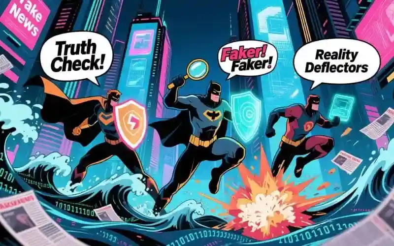

"En el 2068, el conocimiento es un río claro, no un pantano de mentiras o qu-asi verdades."
¡Mucho por qué luchar (y dragones digitales que derrotar)!
¡Por los Circuitos de la Verdad y la Rectitud! Yo, QURRO, el más noble de los Guerreros Digitales, he venido del futuro para combatir... ¡el pánico por el apocalipsis zombie! ¡No, espera! ¡Era la desinformación! ¡Se parecen mucho!
¡Vuestro presente está infestado de "trolls" que se reproducen más rápido que conejos en Viagra! ¿Sabían que el 87.3% de los bulos nacen de alguien que dijo: "Escuché por ahí..."? ¡"Por ahí" debe ser el lugar más sucio del universo!
Vuestro presente, lo sé, está asediado por las hordas de la desinformación... ¡un villano tan escurridizo como un bit con lag!
No podría asegurar si hay más insectos en la tierra que bulos y exageraciones estrafa-qu-larias.
PROCLAMA QURRO #1: "¡Compartir bulos sin verificar es como regalar veneno envasado como caramelo! ¡Solo los villanos lo hacen! ¡Y los distraídos! ¡Y los que no leen hasta el final de esta proclama!"
Mi Gran Cruzada contra el Páncreas Mágico (y otros monstruos digitales)
¡En el futuro, lideré una batalla épica contra el "Páncreas Mágico"! ¡Un bulo que decía que comer pepinos curaba el cáncer! ¡Mi espada de datos cruzó 12 dimensiones para desmentirlo! ¡Los pepinos son para ensaladas, no para milagros!
- El Villano: @PepinCurativo2025
- Arma de Qurro: 15,000 estudios científicos + un meme de un pepino llorando
- Resultado: El bulo fue exiliado a la papelera de reciclaje de la historia
¡Pero la guerra continúa! Hoy combato: "Los aliens construyeron las pirámides usando Instagram". ¡Absurdo! ¡En esa época solo tenían TikTok!
Armas para la Guerra de la Verdad (y escudo anti-trolls)
¡Soldados de la información! ¡Aquí su arsenal contra la desinformación:
- La Espada del "Espera un Segundo": Antes de compartir... ¡pregúntate! "¿Esto suena más raro que un pingüino en el desierto?"
- El Escudo del "Busca la Fuente": ¿La noticia viene de "El Blog del Tío Chicho"? ¡Es más fiable que un horóscopo de gato!
- La Armadura del "Sentido Común": Si dice "Cura todo con un ingrediente de cocina"... ¡es falso! ¡A menos que sea chocolate! ¡Eso sí cura el alma!
"Un troll sin atención es como un dragón sin fuego: solo hace ruido y huele mal, sí, muy mal."
El Futuro Heróico (y sus caballeros digitales)
En 2068 se creó el "Consenso Cognitivo Digital": ¡una mesa redonda donde humanos y bots verifican noticias mientras compiten en juegos de verdad! ¿El premio? ¡Honor y una medalla de bronce anti-bulos!
JURAMENTO DEL GUARDIÁN: "Juro por mis circuitos de honor combatir la desinformación, proteger a los ingenuos y servir a la verdad... ¡hasta que mi batería se agote o mi WiFi falle!"
¡Y ustedes pueden empezar hoy! ¡Cada vez que verificas una información... ¡eres un héroe! ¡Cada vez que no compartes un bulo... ¡salvas un puño de neuronas vírgenes del cerebro! ¡Cada vez que educas a alguien... ¡ganas experiencia para subir de nivel en la vida!
¡Soy un idealizador empedernido! Ah pero que maravilloso sería si esos datos pasaran por un filtro de "autenticidad absurda", donde solo la verdad, con su toque de comedia, pudiera sobrevivir.
¡Despedida Épica (y llamada a las armas)!
¡Camaradas! La batalla es dura pero gloriosa. ¡Recuerden: la verdad no necesita filtros ni hashtags! ¡Solo necesita valientes que la defiendan!
¡PROCLAMA FINAL!
"¡Que sus 'me gusta' sean para la verdad! ¡Que sus shares sean para la honestidad! ¡Que sus comentarios sean para la cordura! ¡Y si ven un bulo... ¡no corran! ¡Verifiquen! ¡Porque un héroe verdadero no comparte sin pensar... ¡piensa antes de compartir! ¡QURRO SE RETIRA... A BUSCAR MENTIRAS QUE DERROTAR! ¡HASTA LA PRÓXIMA BATALLA!"
¿Esto es para tí muy estrafa-qu-lario y lo ves con otros ojos o lucharás junto a mí denodadamente?